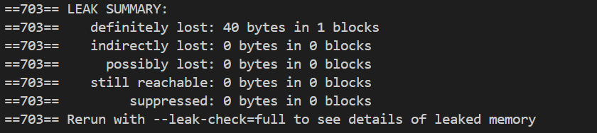
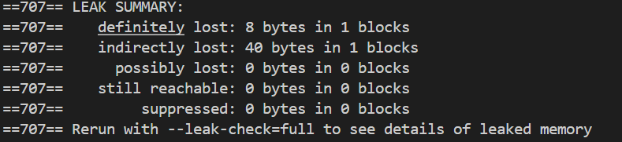
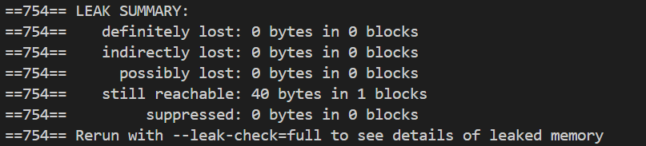
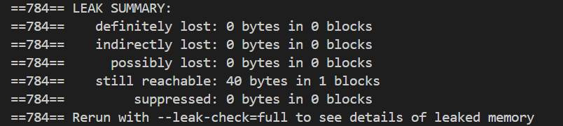
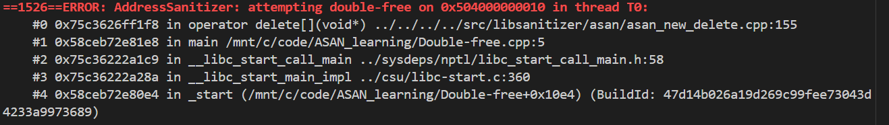
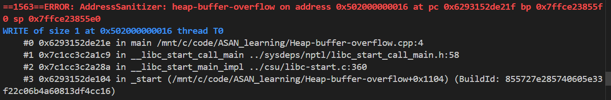
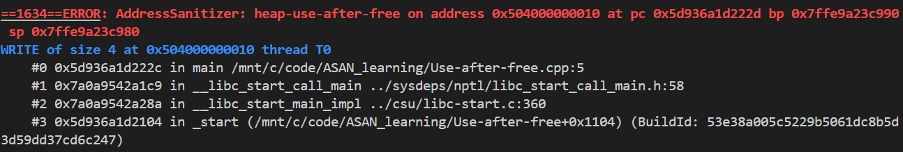
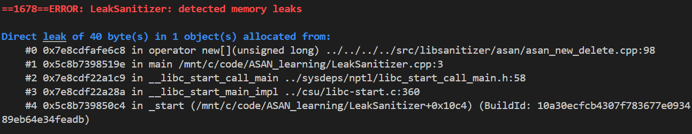

C++ 内存泄漏检测：Valgrind 和 ASan
前言
在 C++ 中，一个绕不开的问题就是 内存管理，而 内存管理 里经常要做 内存泄漏 / 非法访存 检测
通常来说，这类问题是由 程序员操作失误，没有注意代码安全性 导致的，手写代码时很常见，比如：
alloc-but-not-free：malloc/new之后忘记free/delete- 指针重新赋值：旧地址丢了，堆块再也找不到
- 对数组用
delete而不是delete[] - 越界读写、释放后再用、重复释放
内存泄漏 会让 用户进程占用的内存不断上涨，长时间运行更容易出问题，需要尽量避免
要检测这些问题，目前主流有两类工具：Valgrind 和 ASan（AddressSanitizer）。本文从 底层原理 和 使用示例 两边展开，并补充它们各自的 其他能力
Valgrind
简述
Valgrind 是一套跑在 Linux（以及部分类 Unix）上的 动态分析框架
常见用法 是：程序已经编译成 可执行文件 后，再用 Valgrind 在 运行时 做 动态二进制插桩（DBI），观察真实 执行路径 上的内存行为
相对后面的 ASan，Valgrind 一般更慢、内存开销也更大，但优点是：
- 不用改编译选项，对已有二进制也能跑
- Memcheck 对 未初始化值传播 这类问题检测得比较细致
- 除了泄漏，还能检测越界、非法
free、部分use-after-free
检测内存泄漏时，用的通常是 Memcheck 工具（默认工具）
Memcheck 在进程退出时做 泄漏扫描，会把 未释放块 分成四类：
definitely lost：肯定丢了，没有指针还能指到这块indirectly lost：根指针已经丢了，这块只能通过其他已丢块间接到达possibly lost：只剩 内部指针（指到块中间），不能确定是不是故意为之still reachable：从全局 / 静态区等还能到达，严格说 还没丢，但进程结束前一直占着
严重程度大致 从上往下 递减
底层原理
Valgrind 的 Memcheck 的 底层原理 是：
- 把 用户程序 的机器码 反汇编
- 翻译成 Valgrind 自己的 中间表示 IR（VEX IR）
- 在 IR 上 插入检测逻辑
- 再 编译回宿主机机器码 执行
可以理解成：用户程序 跑在 Valgrind 提供的 合成 CPU / 虚拟执行环境 里，每条访存和不少运算 都会被加上一层检查
flowchart LR
A[用户二进制] --> B[反汇编]
B --> C[VEX IR]
C --> D[Memcheck 插桩]
D --> E[回编译成宿主机器码]
E --> F[在合成 CPU 上执行]
Memcheck 维护两类 影子状态（shadow state）：
- V-bits（Valid / definedness）
- 大致是：应用数据的每一个 bit，对应一个“是否已定义”的影子 bit
- 用来检测 未初始化内存参与运算、条件跳转、系统调用参数 等情况
- A-bits（Addressability）
- 大致是：每个字节是否允许被访问
- 堆块边界外、已释放区域、部分栈红区等会被标成 不可访问
运行时 的 核心规则 可以概括成：
-
读内存：
- 先看目标地址的 A-bits，是否 允许读
- 再把对应 V-bits 载入 影子寄存器
-
写内存：
- 先看目标地址 是否 可写
- 再把寄存器里的 V-bits 写回 影子内存
-
需要“值必须已定义”的操作（比如条件跳转、部分算术）：检查操作数 V-bits，若未定义就报错
-
malloc/free等分配器包装：- 更新 堆元数据 和 A-bits
free后把该区域标成 不可访问
进程退出前，Memcheck 做一次 reachability 扫描：
flowchart TB
A[从寄存器 / 全局 / 静态区出发] --> B[沿指针可达的堆块]
B --> C{还能从外部到达?}
C -->|能| D[still reachable]
C -->|不能| E{只剩内部指针?}
E -->|是| F[possibly lost]
E -->|否| G{是否只能从其他已丢块到达?}
G -->|是| H[indirectly lost]
G -->|否| I[definitely lost]
注：
- Valgrind 检测的是 运行时实际执行到的路径，没有执行到的分支不会报错
- 优化等级过高、缺少
-g时，栈回溯信息会不完整、也不方便阅读，示例里建议使用gcc/g++ -g -O0或-O1
使用示例
下面按 Memcheck 的 四种泄漏类型 分别举例
命令类似：
g++ -g -O0 demo.cpp -o demo
valgrind --leak-check=full --show-leak-kinds=all ./demo
definitely lost
即 Memcheck 能确定 这块内存已经找不到了，典型就是局部指针 alloc-but-not-free：
#include <stdlib.h>
int main() {
int* p = (int*)malloc(10 * sizeof(int));
return 0; // p 离开作用域，堆块再也不可达
}
运行截图

indirectly lost
即 泄漏不是 最外层那一块 单独造成的：根指针 丢了以后，只能通过 已丢失块 到达的内存，会记成 indirectly lost
比如 指针 的 指针，外层都没 free：
#include <stdlib.h>
int main() {
int** p = (int**)malloc(sizeof(int*));
*p = (int*)malloc(10 * sizeof(int));
for (int i = 0; i < 9; ++i) {
(*p)[i] = i;
}
return 0; // 丢了 p，内层 *p 只能间接到达
}
运行截图

链表 里只丢掉 头指针、后面节点都没释放，也常出现 indirectly lost
possibly lost
即 Memcheck 不能完全确定 是不是泄漏：还存在指向这块的指针，但指到了 块内部，不是 块起始地址
比如：
#include <stdlib.h>
int* p = NULL;
int main() {
p = (int*)malloc(10 * sizeof(int));
p++; // 只剩内部指针
return 0;
}
运行截图

有些 自定义分配器、把指针藏在块中间 的写法也会落到这一类，需要 人工判断
still reachable
即退出时 从全局 / 静态等根上仍能到达 这块内存
指针没丢，所以不算 丢了，但如果程序长期运行、只分配不释放，仍然可能 越积越多，比如：
#include <stdlib.h>
int* p = NULL;
int main() {
p = (int*)malloc(10 * sizeof(int));
return 0; // 全局 p 还指着它 -> still reachable
}
运行截图

其他功能
Valgrind 不只是 Memcheck，常见工具还有：
- Memcheck：检测内存错误和内存泄漏（最常用）
- Helgrind：检测多线程中的数据竞争、锁顺序问题
- DRD：另一套数据竞争检测工具，和 Helgrind 可以互补使用
- Cachegrind：统计 cache 与分支未命中情况
- Callgrind：分析调用图和开销，常配合
kcachegrind查看 - Massif：观察堆占用随时间的变化，用来定位持续上涨的内存来源
- DHAT：分析堆访问模式，判断分配是否合理
Memcheck 里除了泄漏，也经常能直接报告：
- 非法读 / 写（越界、野指针）
- 使用未初始化值
- 不匹配的
free/delete/delete[] - 重复
free
ASan
简述
ASan 全称 AddressSanitizer，最早由 Google 做在 LLVM/Clang 上，后来 GCC 也支持，MSVC 也有对应能力
它是 编译器 Sanitizer：在 编译期插桩，在 运行期检查
和 Valgrind 的差别很大：
- Valgrind：对 已有二进制 做动态翻译，速度较慢，但通常 不必修改编译参数
- ASan：必须用 特殊选项 重新编译，比如
-fsanitize=address，但通常比 Valgrind 快一个数量级左右，更适合日常 CI
注意：
- ASan 并不是在编译期就把泄漏全部检测完
- 编译期只是 插入检查代码和影子内存逻辑，真正报错发生在运行时（泄漏 则多在 进程退出时 由 LeakSanitizer 扫描）
底层原理
ASan 的核心是 Shadow Memory（影子内存）+ 红区（redzone）+ 隔离区（quarantine）
编译期插桩
开启 -fsanitize=address 后，编译器大致会：
- 在每次 load / store 前插入检查，类似
__asan_loadN/__asan_storeN - 替换 / 包裹
malloc、new、free、delete等 - 给栈上数组等加 栈红区
- 链接进 ASan 运行时库
影子内存
应用内存按 8 字节 → 1 字节 shadow 压缩映射：
- shadow 值为
0：这 8 字节都可访问 - shadow 值为
1..7：前 k 字节可访问，后面不可访问（处理不是 8 对齐长度的 尾部） - 负值 / 特殊编码：表示 不同类型 的 已毒化（poisoned） 区域 比如 堆红区、栈红区、全局红区、已释放内存等
检查时：用 地址 算出 shadow 地址，读 1 字节，判断这次访问 是否落在 可访问范围 内
flowchart LR
A[应用地址 p] --> B["shadow = MemToShadow(p)"]
B --> C{shadow 允许这次访问?}
C -->|否| D[报错并打印栈]
C -->|是| E[执行原来的 load/store]
红区与隔离区
-
分配时：
- 在块前后垫 redzone，并在 shadow 里标成有毒
- 越界读写 一旦访问到红区，就会触发错误并中止
-
释放时：
- 把整块标成有毒，并放入 quarantine（隔离队列），暂时不真正还给系统
- 这样 use-after-free 在短期内仍然大概率会访问到 有毒区，而不是碰巧又 被 新的分配 复用
和泄漏检测的关系
纯 ASan 更擅长检测 地址错误（越界、UAF、double-free）
泄漏 往往由捆绑的 LSan（LeakSanitizer） 在退出时做可达性扫描。Linux / Clang / GCC 上常见组合是：
g++ -g -O1 -fsanitize=address -fno-omit-frame-pointer demo.cpp -o demo
./demo
有的环境要用 ASAN_OPTIONS=detect_leaks=1 显式打开 泄漏检测
使用示例
下面用 -fsanitize=address 演示几类 ASan 比较适合检测的问题
Double-Free
代码
#include <cstdio>
int main() {
int* p = new int[10];
delete[] p;
delete[] p;
return 0;
}
运行结果

Heap-Buffer-Overflow
代码
#include <cstdio>
int main() {
char* buf = new char[5];
buf[6] = 'A'; // 越过分配大小，踩红区
delete[] buf;
return 0;
}
运行截图

Heap-Use-After-Free
代码
#include <cstdio>
int main() {
int* p = new int[10];
delete[] p;
p[0] = 100; // 释放后仍写入
return 0;
}
运行截图

LeakSanitizer
代码
#include <cstdio>
int main() {
int* p = new int[10];
return 0;
}
运行截图

其他功能
广义的 Sanitizer 家族 里，和 ASan 常一起提的有：
- ASan（AddressSanitizer）：越界、UAF、double-free 等地址错误
- LSan（LeakSanitizer）：泄漏（常和 ASan 一起开）
- UBSan（UndefinedBehaviorSanitizer）：未定义行为（有符号溢出、错误类型转换等）
- TSan（ThreadSanitizer）：数据竞争
- MSan（MemorySanitizer）：未初始化读（主要是 Clang，开销也大）
- HWASan：借助硬件或指针标签做地址检测，开销模型与 ASan 不同
常用 编译选项 举例：
# 地址错误 + 常见泄漏
g++ -g -O1 -fsanitize=address -fno-omit-frame-pointer main.cpp -o main
# 未定义行为
g++ -g -O1 -fsanitize=undefined main.cpp -o main
# 线程数据竞争（一般不要和 ASan 同时开启）
g++ -g -O1 -fsanitize=thread main.cpp -o main -pthread
注：
- ASan / TSan 等 一般不要和过高优化等级、某些自定义分配器、以及其他预加载检测库随意混用
- 需要完整查看调用栈时，应保留
-g，并建议加上-fno-omit-frame-pointer，这样栈信息 更完整、也更容易阅读
Valgrind 和 ASan 怎么选
| Valgrind Memcheck | ASan | |
|---|---|---|
| 介入时机 | 运行时动态翻译已有二进制 | 编译期插桩 + 运行期检查 |
| 速度 | 很慢 | 相对快很多 |
| 改编译参数 | 通常不用 | 必须 -fsanitize=... |
| 未初始化值 | 检测能力较强 | 弱于 Memcheck / MSan |
| 越界 / UAF | 能检测不少情况 | 检测能力很强 |
| 平台 | 以 Linux 为主 | Clang / GCC / 部分 MSVC |
| 适合场景 | 线下深入排查、不方便重新编译 | 日常开发、CI 回归 |
实践上比较常见的做法是：
- 开发 / CI 默认开启 ASan（必要时再加 UBSan）
- 遇到更难定位的问题再用 Valgrind 做深入排查，尤其是 未初始化值，以及 只能拿到已有二进制、不方便重新编译 的场合
结语
Valgrind 依靠 动态二进制插桩 和 V/A 影子位，持续跟踪运行时的内存状态 ASan 依靠 编译期插桩 以及 shadow / redzone / quarantine，在 运行时 检测地址错误；泄漏检测则多交给 LSan
两者并不是互相替代的关系，更像是 快速日常检测 和 深入排查 的搭配
把泄漏类型分清楚，尽早发现越界和 use-after-free，C++ 里最难处理的一类内存问题通常会 容易很多

说些什么吧！